定位
3个模型：9B分段、27B描述、27B奖励；不直接输出机器人动作。
把“什么时候发生什么”和“做得怎么样”拆成可验证的接口：先分段再用上下文写动作描述，同一个奖励模型按prompt提供结果、过程、rubric评分。价值是数据生产效率；标签质量提升到闭环机器人性能之间，仍需要独立实验。
原始视频有很多，但训练policy还需要知道“哪段在开抽屉”“哪只手拿着什么”“刚才是失败还是只是慢”。人工逐段标注贵，通用VLM又容易漏掉短动作、错配手角色、把最后成功倒灌成中间每一步都正确。FLORA把这些问题组织成可规模化部署的数据引擎。
它直接建立在Qwen3.5 VLM、两阶段视频标注和机器人奖励模型之上，和Refiner、LeRobot annotate、Pegasus等完整标注系统比较。作者称用于GR00T训练；本文给出标签指标和成本分析，但没有“使用FLORA标签前后，同一机器人闭环SR”的控制实验。
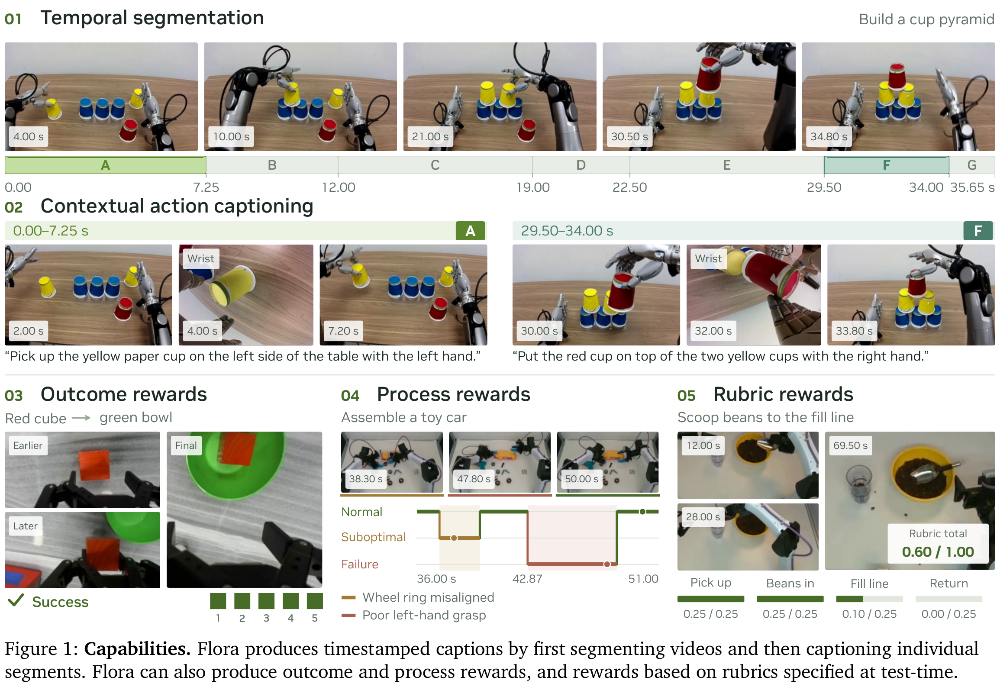
| 模型 | 输入→输出 | 训练与冻结 |
|---|---|---|
| Segmenter：Qwen3.5-9B | 视频滑窗→起止时间＋跨窗继续标志 | SFT＋GRPO；rank32、α64的语言attention/MLP LoRA；视觉冻结 |
| Captioner：Qwen3.5-27B | 固定区间及其前后视觉→动作描述 | SFT更新LM和visual merger；RL更新LM，视觉encoder/merger冻结 |
| Rewarder：Qwen3.5-27B | 视频＋任务＋prompt/rubric→三种评分接口 | 公开checkpoint只做SFT；更新LM、merger和视觉encoder，后者更低学习率 |
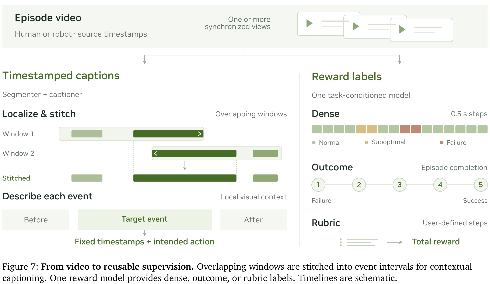
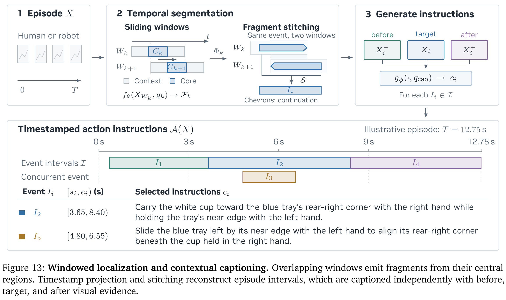
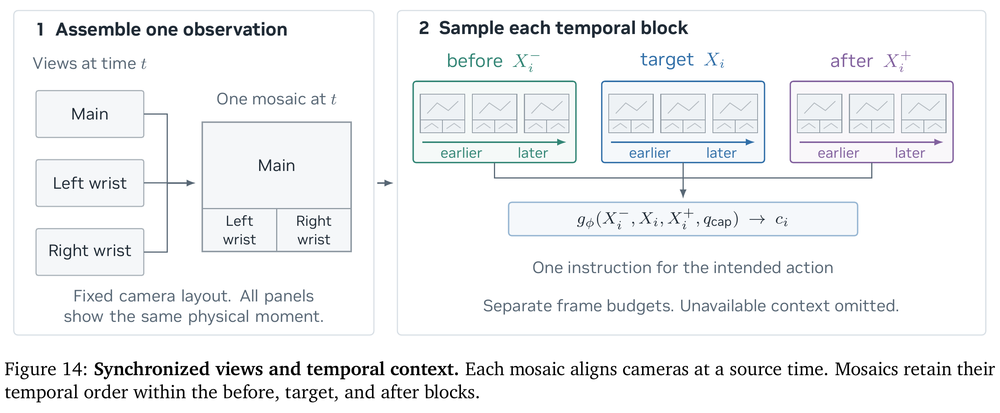
A(X)={(sᵢ,eᵢ,cᵢ)}；Iᵢ=[sᵢ,eᵢ)，0≤sᵢ<eᵢ≤T
Fₖ=fθ(XWₖ,qₖ)={(uₖⱼ,vₖⱼ,ℓₖⱼ,rₖⱼ)}
I=S({(Wₖ,Φₖ(Fₖ))})
jᵢ⁻∈argmaxeⱼ≤sᵢeⱼ；jᵢ⁺∈argminsⱼ≥eᵢsⱼ
cᵢ=gφ(Xᵢ⁻,Xᵢ,Xᵢ⁺,qcap)
“意图”不保证成功：手伸向杯子但抓空，动作描述仍可以是尝试抓杯子，过程标签则是抓握失败。这个分工让训练者既能按技能组织数据，又能按执行质量筛选。
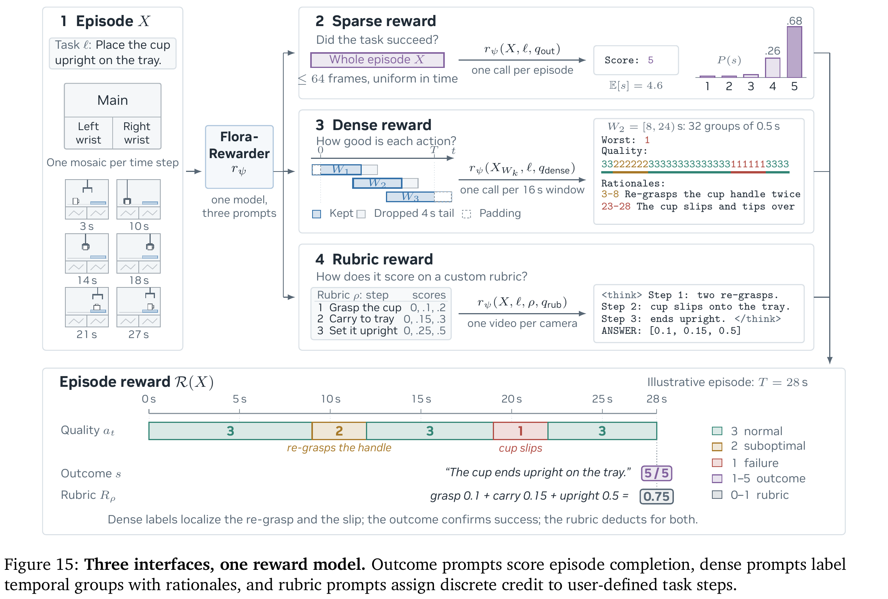
R(X)=({aₜ},s)，aₜ∈{1,2,3}，s∈{1,…,5}
pₖ=pψ(s=k|X,ℓ,qout)；E[s]=Σₖ₌₁⁵ k·pₖ；ŷ=(E[s]−1)/4
rψ(XWₖ,ℓ,qdense)=(wₖ,(aₖ,₁,…,aₖ,₃₂),{(uₖⱼ,vₖⱼ,cₖⱼ)})，wₖ=mingaₖ,g
ŷrub∈V₁×…×Vₙ；Rρ(X)=Σⱼŷⱼ；L₁(ŷ,y)=Σⱼ|ŷⱼ−yⱼ|
Outcome最多均匀取64帧，约10Hz候选采样后限制预算，覆盖首尾；score-only最多12新token、有rationale最多160。提取生成score位置top20候选中1–5数字的概率再归一化，这个分布不等于已经校准的成功概率。Rubric按每机位独立视频输入，2–10步内部任务或1–4步外部任务；评测时还使用9样本medoid，不能与单次greedy成本混为一谈。
附录G给出精确窗口：锚点αₖ对应64个位置αₖ+(i−9)/4秒，i=1…64，名义范围[αₖ−2,αₖ+14)。越过episode边缘重复最近帧；两帧一组，取较严重人工标签。训练按episode划分，评测episode不出现在训练/验证。
推理锚点通常每10秒一个，末尾补一个对齐最后帧的窗口。每个非末窗保留前24组，丢最后8组＝4秒；末窗保留有效组。这样多数保留标签能看见至少4秒后文，便于识别刚才的滑落究竟是不是失败。
aₜ=ak*,g*；(k*,g*)=lexmin(k,g)∈C(minτ∈τₖ,g|t−τ|，−min(g−1,32−g)，k，g)
解析采用结构化语法，Worst与Quality不一致拒绝，解析失败替换为全normal并加flag。生产者必须保留这个flag，否则会把技术失败当成安全正常数据。回看窗口也意味着它主要适合离线标注、分析与数据筛选；若改成在线机器人安全监控，需要处理后文缺失、额外延迟和重新校准，不能原样宣称是因果实时critic。
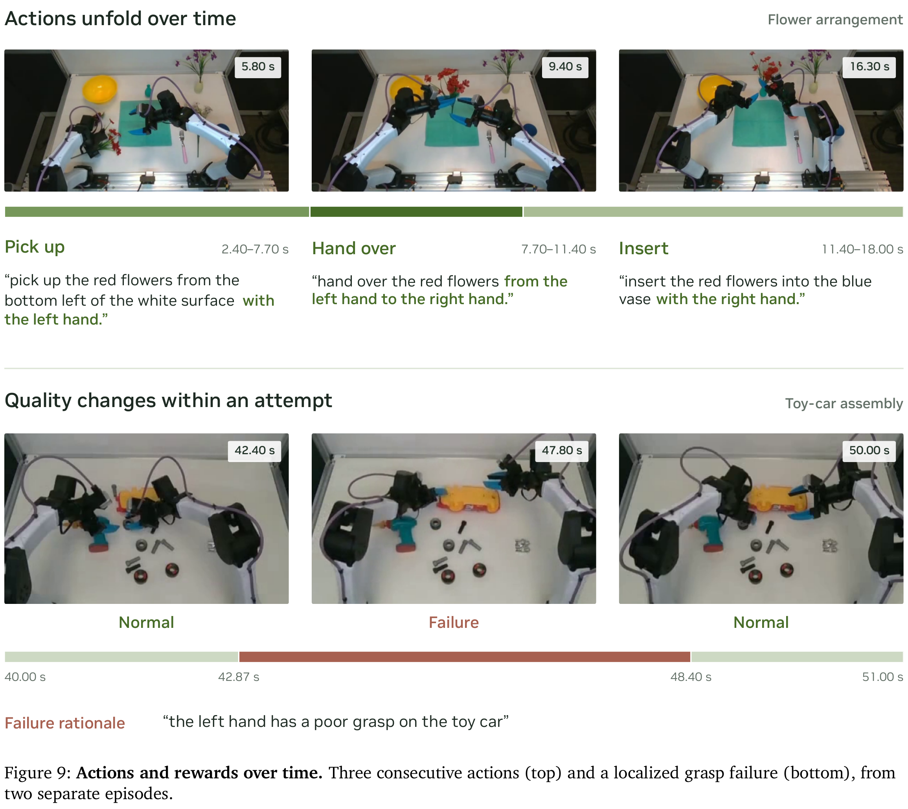
Lη(B)=−[Σ(x,y)∈BΣt=1…|y|log pη(yₜ|x,y<ₜ)] / [Σ(x,y)∈B|y|]，η∈{θ,φ,ψ}
B为batch，x为视觉与任务prompt，y为目标输出文本；|y|为输出token数。只在输出token上计算交叉熵，按整个batch输出长度归一。η依任务选择分段、描述或奖励模型参数。
rseg=0.45F₀.₅＋0.15F₀.₇₅＋0.25P₀.₅＋0.15B
Fτ与Pτ是tIoU阈值τ下、一对一匹配后的F1和precision；B是匹配对边界奖励，端点总误差d另给错误继续flag各加0.5秒，单对为max(0,1−d/1秒)。先最大匹配数量，再最小化截断误差。没匹配时B=0，双方空集合则奖励1；格式无效或截断奖励0。
R=Σa∈Amₐ；M=Σa∈Amₐzₐ；F=1.25Σh∈Ewg(h)；q=rcap=2M/(R+M+F)
A是有证据的参考要求，mₐ是质量权重，zₐ是是否覆盖；四组action/identity/coordination/detail权重.50/.25/.20/.05。E是已证实错误的语义族，同一错事实重复说只罚一次；来源不确定要求不计入R。阶段依赖要满足，不能用放下后的状态冒充伸手阶段。
两类GRPO都在同一输入的rollout组内减去奖励均值，不做标准差归一。分段LoRA有相对固定SFT策略的KL约束；描述RL更新语言模型。checkpoint在独立验证集选，分段有各受保护组最多跌2pp限制，描述按三本体均值与无逐组退化规则选，两者独立。benchmark不用于选checkpoint。
Rewarder把outcome、dense、rubric样本混合打乱，公开模型只做SFT，没有任务族重加权。原始密集标注是人工动作区间＋质量＋原因，重叠取更严重类别；结果二值成功/失败映成5/1，部分完成p映成1+round(4p)。完整训练数据规模、来源比例和最优混合比未报告。
Φ(S)=Σg∈G(1/|Tg|)Σt∈Tg√(nₜ(S)/Nₜ)
Fseg=2TP/(|Î|+|I*|)
Fjoint=2·maxMΣ(i,j)∈Mqᵢⱼ / (|Î|+|I*|)
DenseCaptionBench用tIoU≥.5，整数微秒边界，不吸附参考边缘；WGO用≥.75且按公开协议吸附首尾外边缘。WGO字幕接受与Dense的点质量又不同，所以两套F1不能直接按数字大小比较。
Dense参考含4,877段：Human3,220、夹爪1,266、灵巧手391。机器人参考中1,364是已确定意图，293是观察操作proxy；来源不确定性保留。Astra还同时充当Dense caption judge，存在generator–judge自偏好风险；固定参考与采样视觉也限制裁判精度。
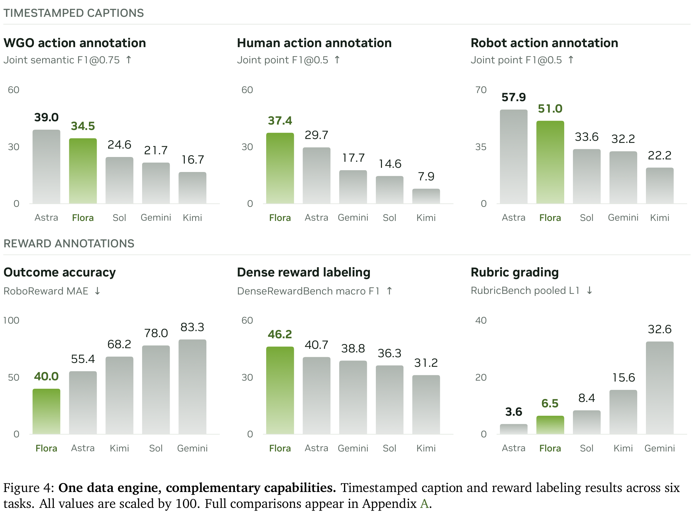
| 项目 | 论文报告 | 能支持的结论 |
|---|---|---|
| LIBERO、RoboTwin等闭环仿真 | 未报告FLORA驱动policy的SR | 标签工具评估不等于控制评估 |
| 使用FLORA训练GR00T | 作者报告生产使用 | 缺少相同policy和数据量的标签前后闭环消融，不能归因SR增益 |
| 评测 / 样本 / 协议 | FLORA | 参照与边界 |
|---|---|---|
| WGO100：25HomER/50DROID/25Galaxea；tIoU.75；三个子集等权 | 分段50.3；gold描述64.7；联合34.5 | Astra46.0/77.4/39.0；分段领先，联合不领先；不是100条直接池化均值 |
| Dense Human100；tIoU.5 | 分段54.6；描述66.5；联合37.4 | Astra44.2/60.3/29.7；本文范围内人类细动作有收益 |
| Dense Robot200；夹爪/灵巧手各100，双组等权 | 66.9 / 73.7 / 51.0 | Astra71.9 / 80.2 / 57.9；FLORA并非全面更优 |
| Dense夹爪 / 灵巧手 | 联合52.6 / 49.4 | 输入、粒度与参考类型不同，不归因于本体单一因素 |
| Robometer：567 OOD轨迹排序；τₐ | 0.720 | Astra0.823更高；专用模型保留原文协议，部分样本数不同 |
| Robometer：成功轨迹255ID / 105OOD；VOC | 0.989 / 0.996 | 与时间线性增长也可高分，不能当失败检测召回；Astra.989/.997 |
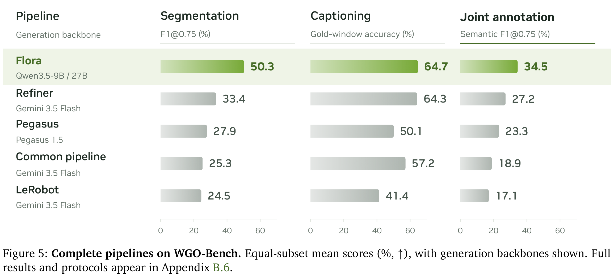
附录B.6换backbone后，Refiner＋Gemini3.8的WGO分段42.0、描述73.8、联合36.4，联合超过FLORA34.5。直接把FLORA模型替换为API而保留生产窗口/拼接，仅19.4/52.1/11.1（Gemini3.5），说明训练模型与流程协同重要，也说明“流程本身一定更好”没有被单独证明。
| 数据 / 指标 | FLORA / 比较 | 协议与误差 |
|---|---|---|
| RoboReward，2831episode；1–5分MAE | 0.400 / Astra0.554 | 原表乘100显示40.0/55.4；不能读成40%失败率 |
| DenseReward，40held-out双臂episode；4861个1Hz步骤 | MacroF1 .462；balanced acc .542；bad-actionF1 .477；failure recall .533 | 3942normal/619次优/300失败；约11%normal误判失败。基线最高失败召回.117，Astra为0 |
| RubricBench，40episode/10任务，任务名与episode均留出；pooledL1 | .065 / Astra.036 | FLORA9样本medoid，基线多数1样本；采样/帧数/推理预算不同 |
| 前向实时监控 / 自动RL后训练闭环 | 本文未报告同协议成功率或安全事件改善 | 回看标签可以辅助此类系统，仍需另行验证 |
缺失请求采用固定分母、无operational credit；Dense机器人评测5个源缺新caption、98个judge job不可用，部分时间指标沿用未改segmenter结果。评分缺失是测量状态，不等于caption一定错；不同历史技术重试预算、native视觉处理和API输入预算也不算严格计算量匹配。
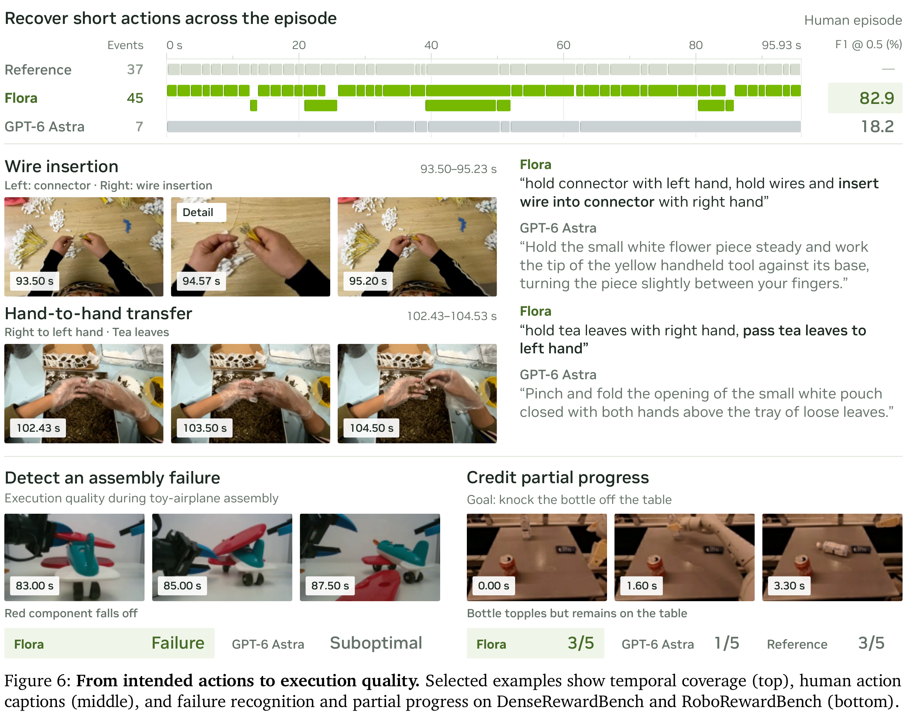
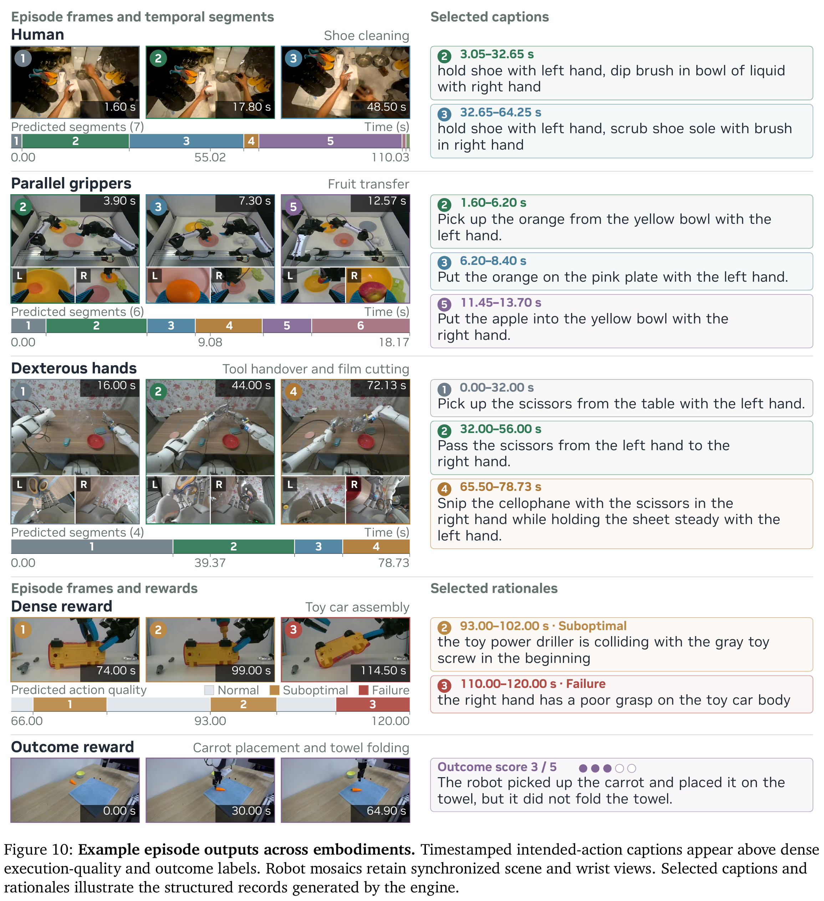
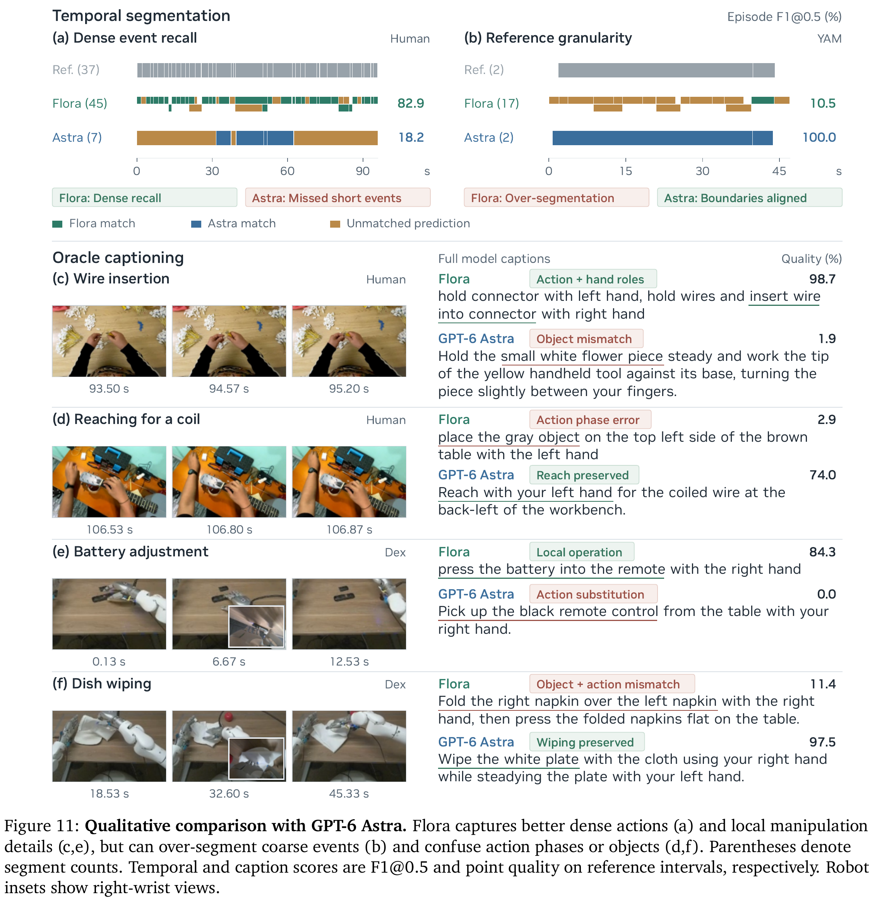
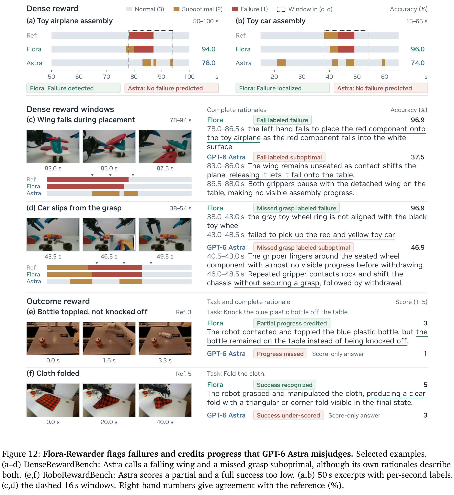
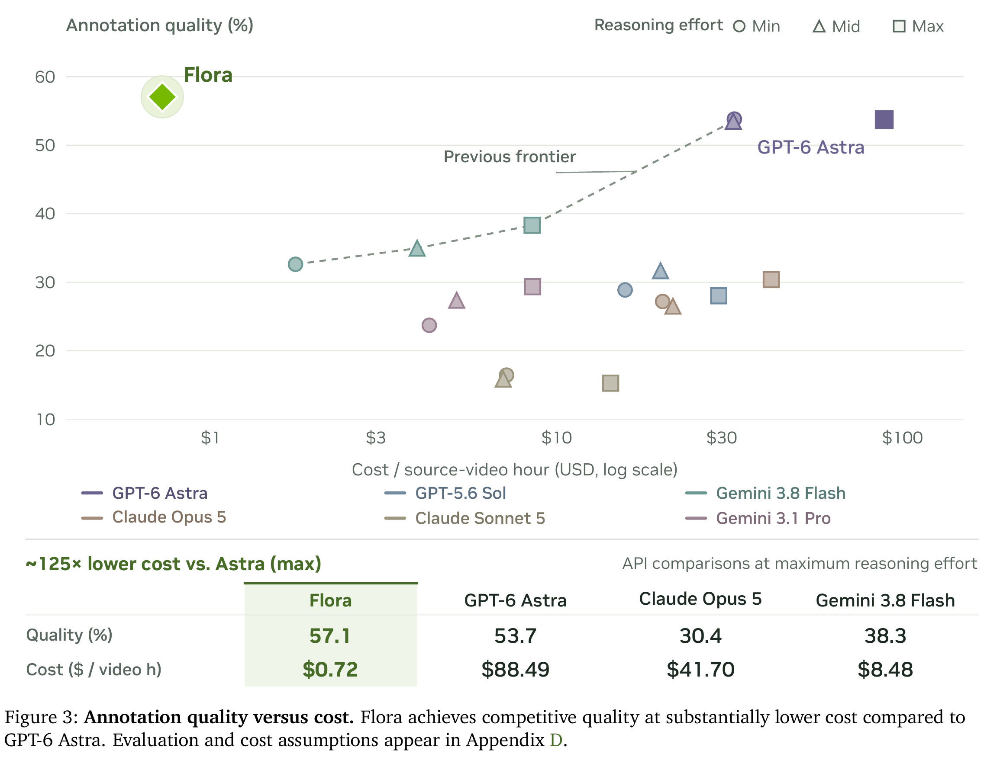
作者生产报告：512张GB300每天标注20万源视频小时。多机位是否逐视角折算会影响读法，应以source-video口径理解；这不是机器人一天新产生20万小时经验。成本和吞吐图是另一套50episode条件分析，不能拿生产报告为其中每项假设背书。
CFlora=p·g·N/(3600·H·S)
服务吞吐来自先前部署研究的负载660窗口/890caption，不是发布RL checkpoint的逐请求实测率；生产GPU小时分母尚未核实。API成本按2026-10-04标准价计分段＋预测区间caption，7062次物理尝试中106次无usage未定价。训练、构建参考、gold-caption、裁判、存储与部署开销不在完整账单内。
50条里20human/15夹爪/15灵巧手；质量先在每本体对分段、gold描述、联合三项等权，再三个本体等权，得57.1。API原始参考快照与FLORA当前快照未完全一致；episode bootstrap只反映样本不确定性，不覆盖裁判、生成、参考和服务变化。
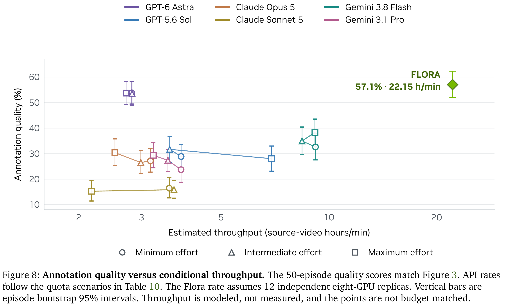
Qₘ=H·min(Rₘ/Aₘ，mink∈KₘLₘ,k/Tₘ,k)
Q₈ᵣ=r·60HS/N
API的R是每分钟请求上限，A是这一组episode请求总数；L/T为各类token配额与总需求比。取最紧瓶颈乘源时长H，得到源视频小时/分钟。GPU的r是8GPU副本数，S为假定episode/秒，乘60换成每分钟。
因此原截图“1/25”与这版PDF不一致：本页按官方2026-10-20 PDF及附录D写约1/125的条件成本估计。实际部署应测decode、I/O、模型服务和质量抽检全链路，再计算自己的价格。
解释性推断：最直接的收益是为Ego/机器人混合语料建立相似的时间语言接口，让“按小时混合”进一步变成“按技能覆盖、手角色、任务粒度、执行质量混合”。它补齐的是数据选择与监督层，无法独自补齐人机几何对齐、可执行动力学或WAM实际控制接口。
原文定位：§2结果、§4方法；附录A完整表、B分段/语义评测、C奖励协议、D成本、E正反例、F分段/描述训练、G三奖励实现、H相关工作。官方项目 · 开源模型。